本项目为养老院室内加气砖隔墙工程：房间分隔、走廊两侧墙体均采用加气砖砌块砌筑。养老类建筑对墙体的防火、隔音、平整度要求高于普通工装——护理期间人员密集、作息规律，墙体既要拦住火，也要隔住音。
乐融班组按标准流程施工：材料进场验收码放 → 放线排版 → 分层错缝砌筑 → 顶部斜砌顶紧 → 交接处挂网 → 成品养护。以下 14 张照片按施工顺序记录了从进场到交付的全过程，图片均来自项目现场实拍。
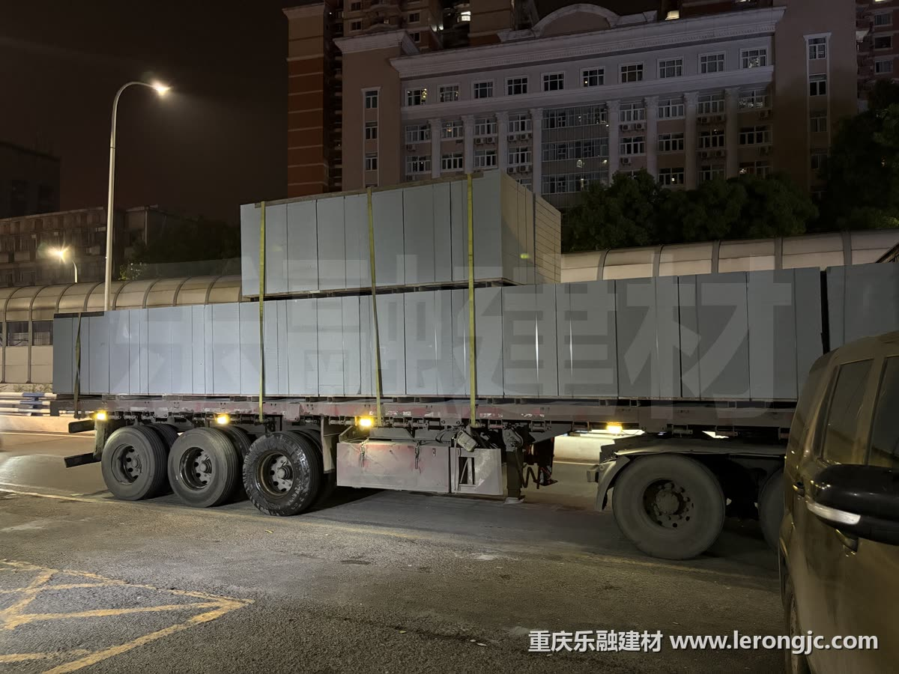
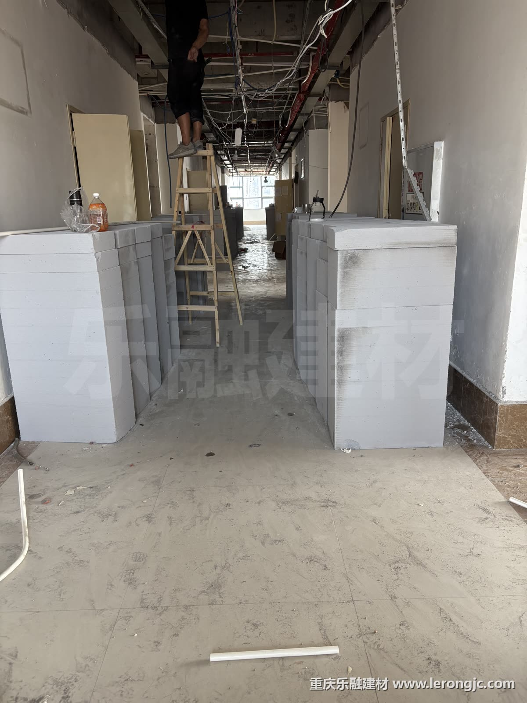
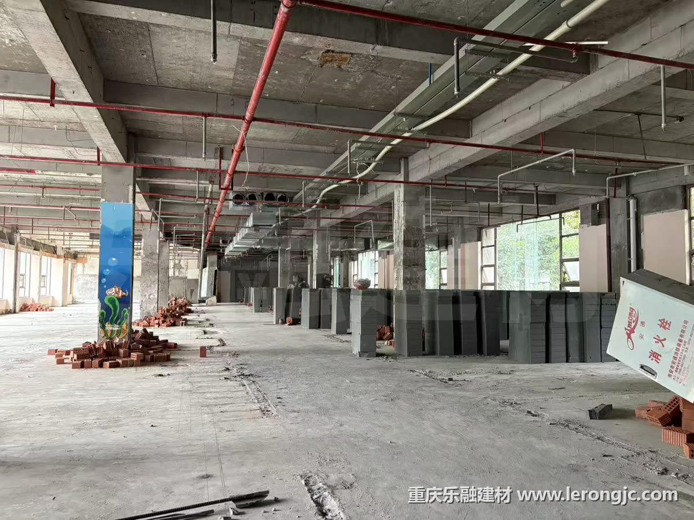
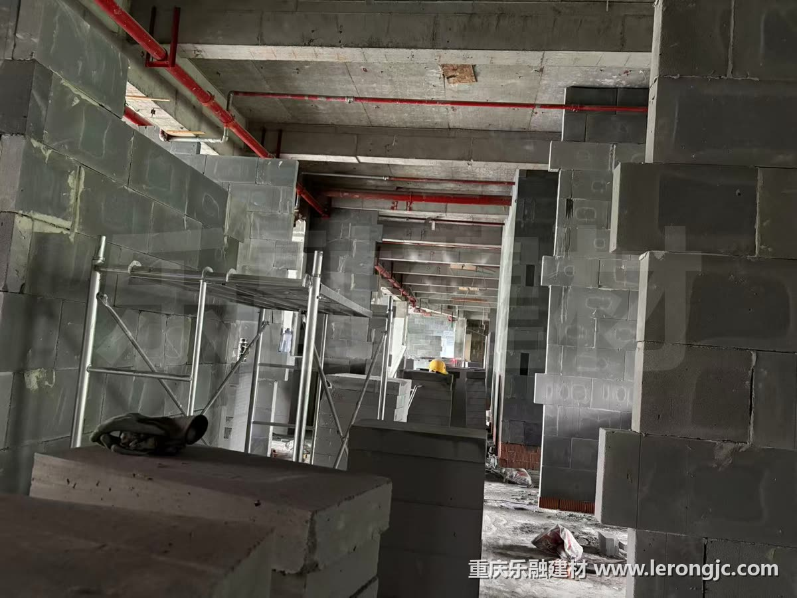
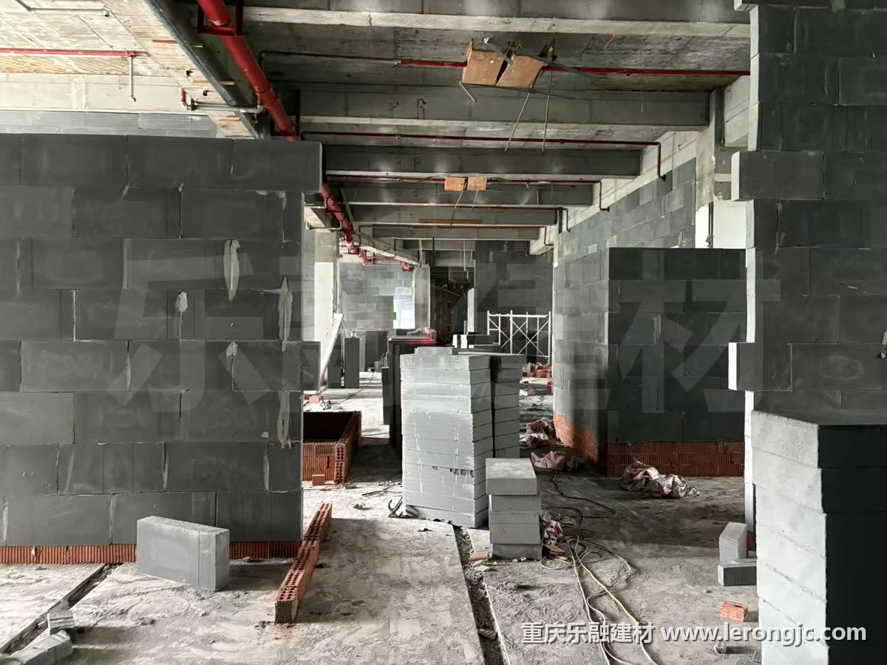
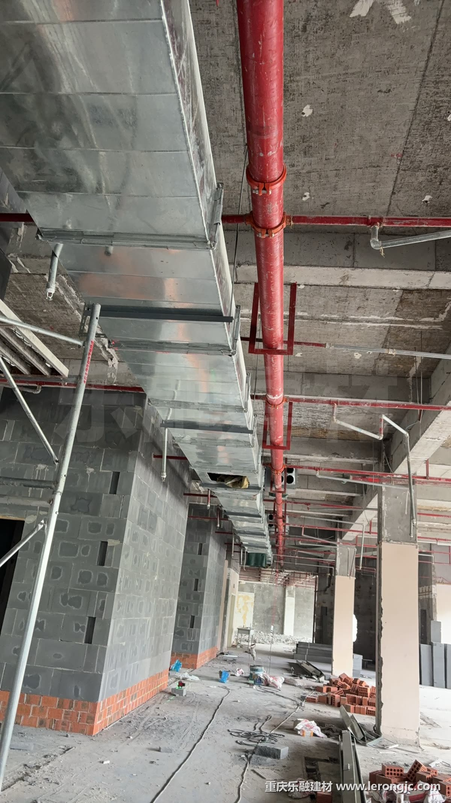
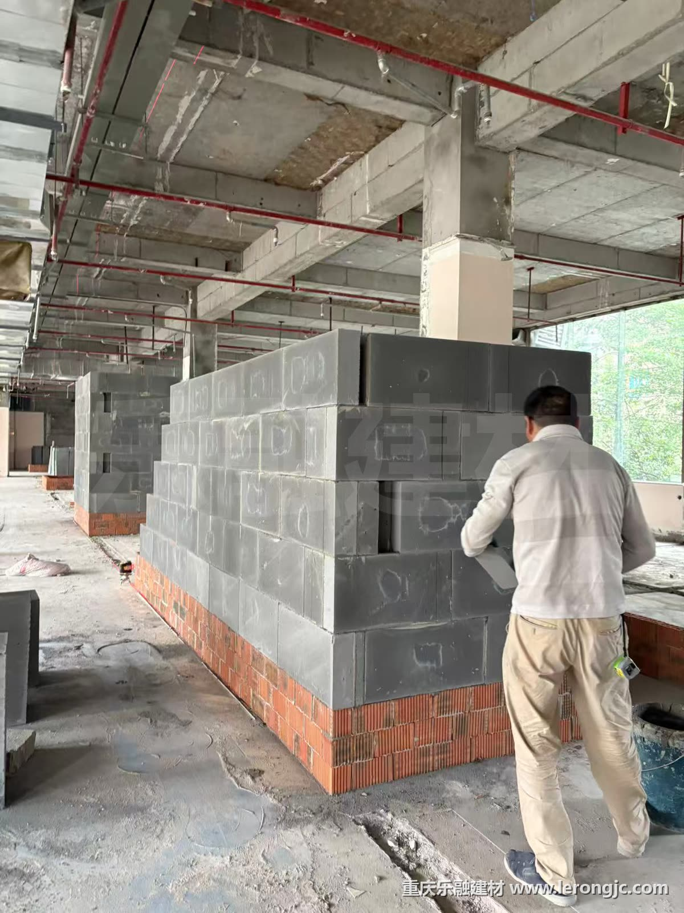
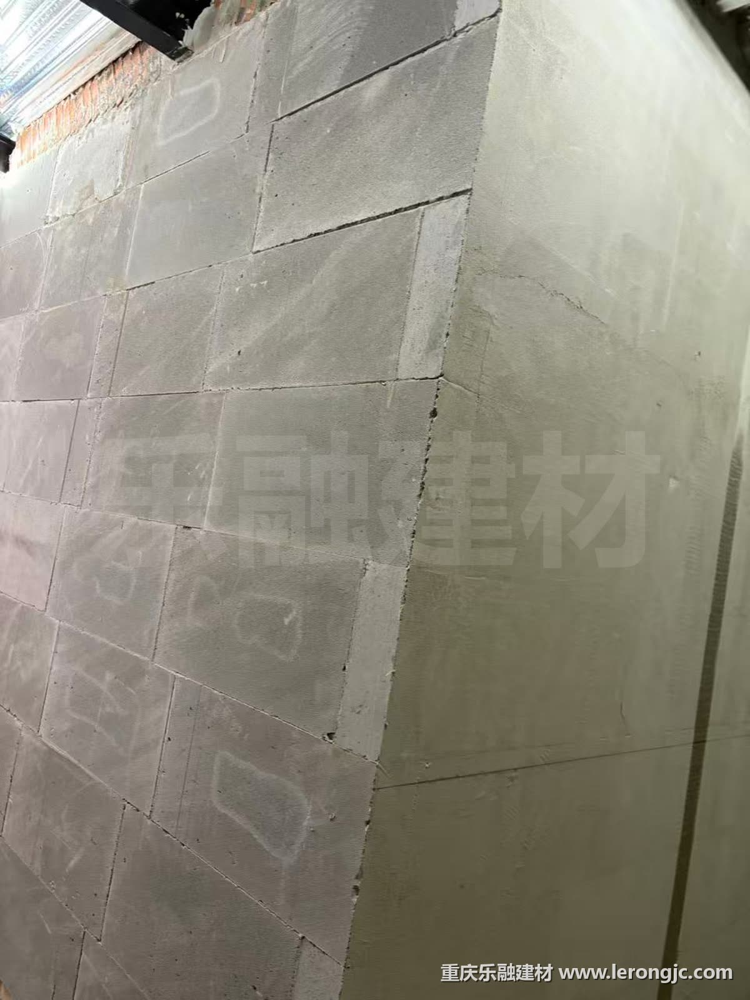
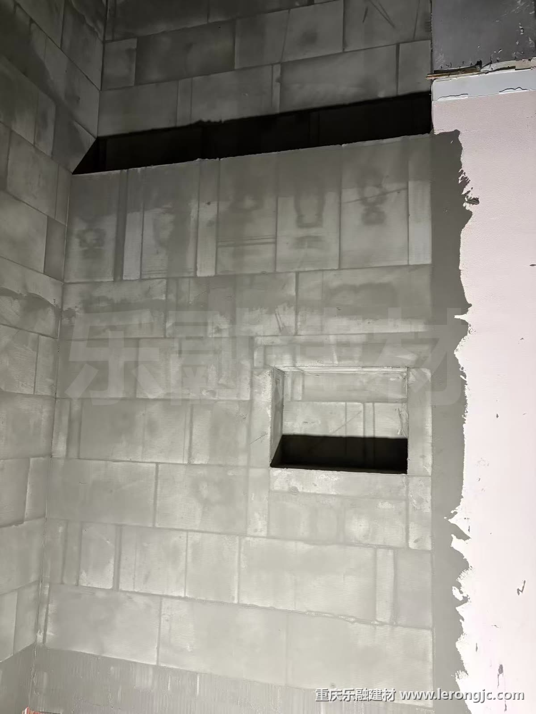
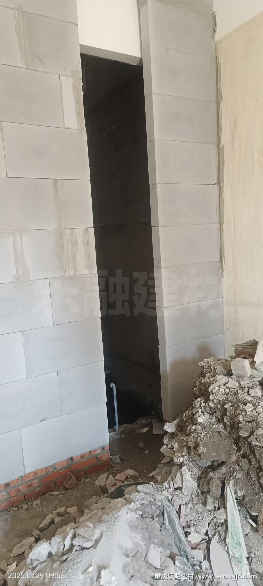
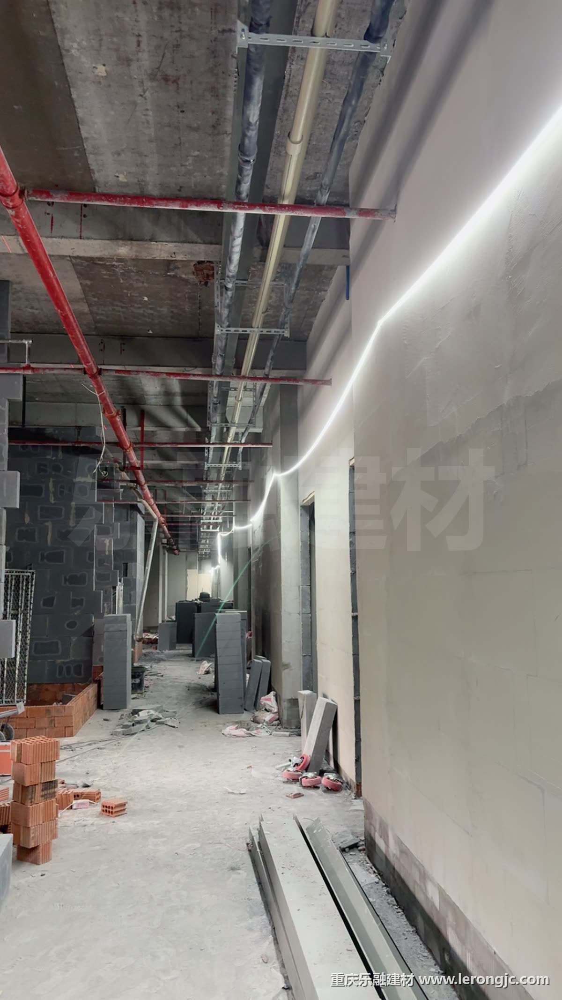
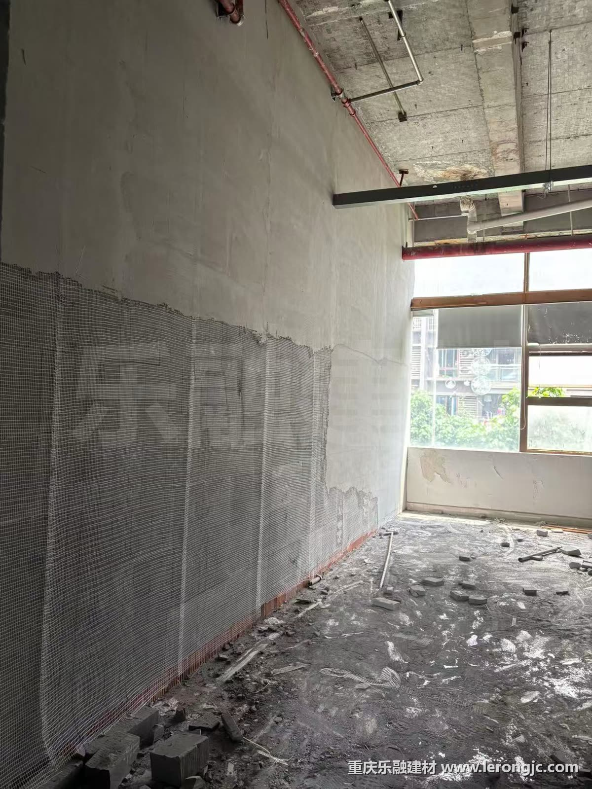
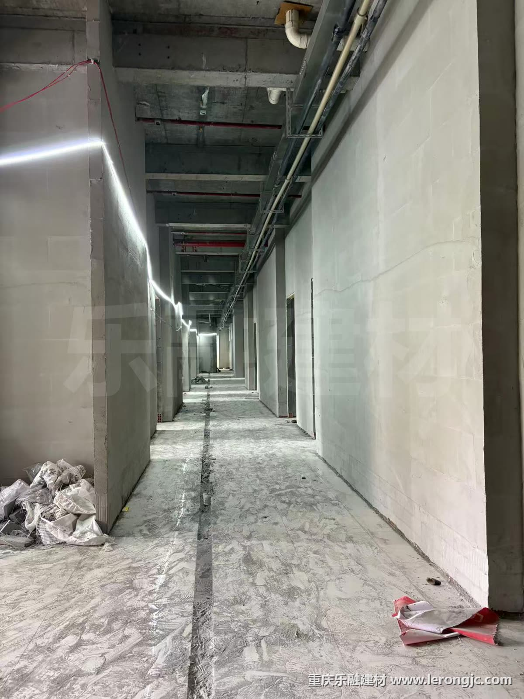
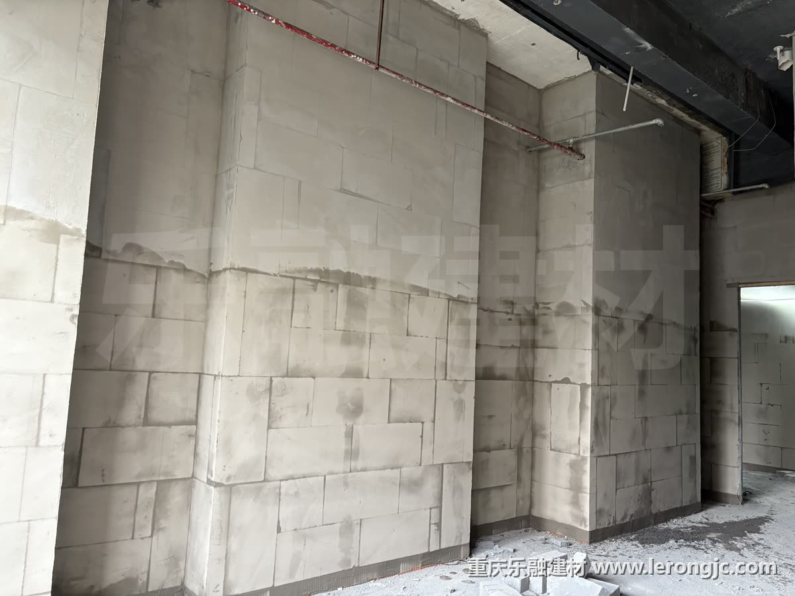
照片记录的是结果，结果背后是材料验收、错缝砌筑、顶紧斜砌、挂网防裂这些看不见的工序。乐融建材所有班组持证上岗、按流程施工，养老院、学校、医院等对防火隔音敏感的项目均可安排参观在建工地。
同类项目咨询：拨打 18723377259（24 小时）或在线留言，免费上门测量、1 个工作日出明细报价。